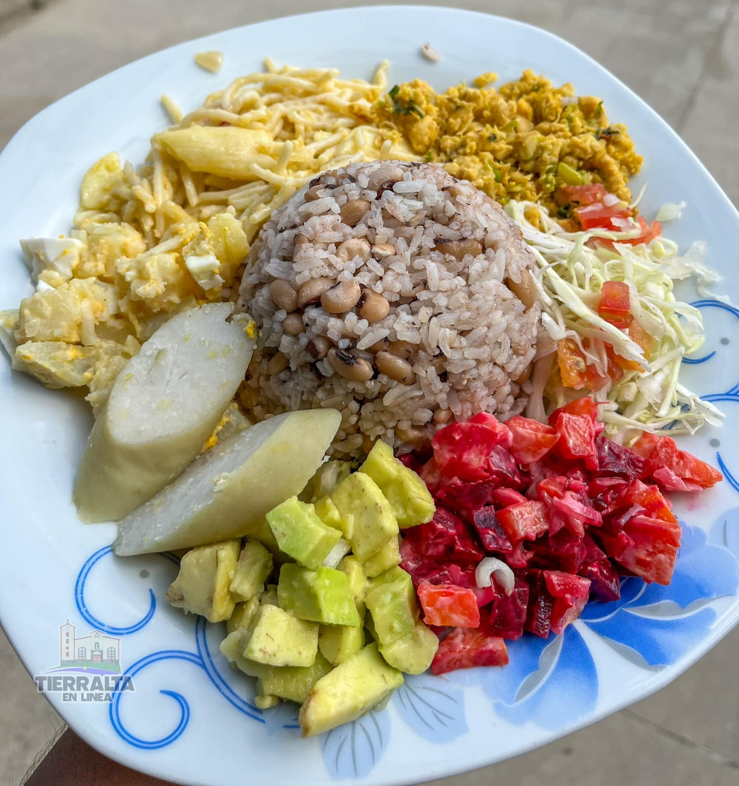

The gastronomy of Tierralta, Córdoba, is an authentic experience of Caribbean culture, characterized by intense flavors, fresh ingredients, and traditional recipes passed down through generations.
In this municipality, food not only nourishes but also tells stories, reflects customs, and strengthens the identity of its people. Dishes combine local products such as plantains, yams, cassava, coconuts, corn, and fish, creating a unique culinary experience that delights locals and visitors alike.
